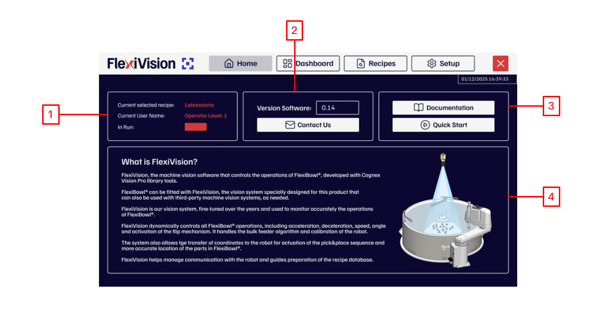
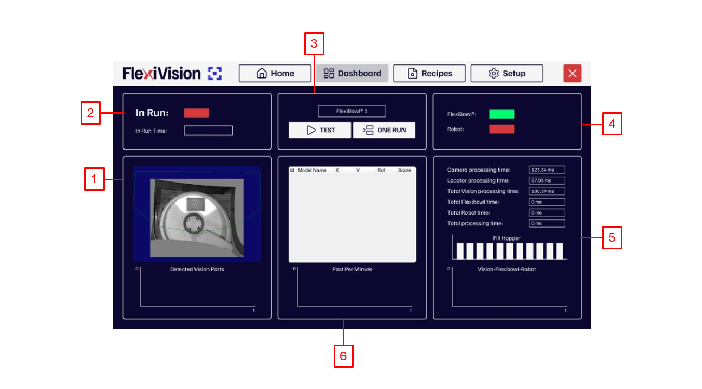
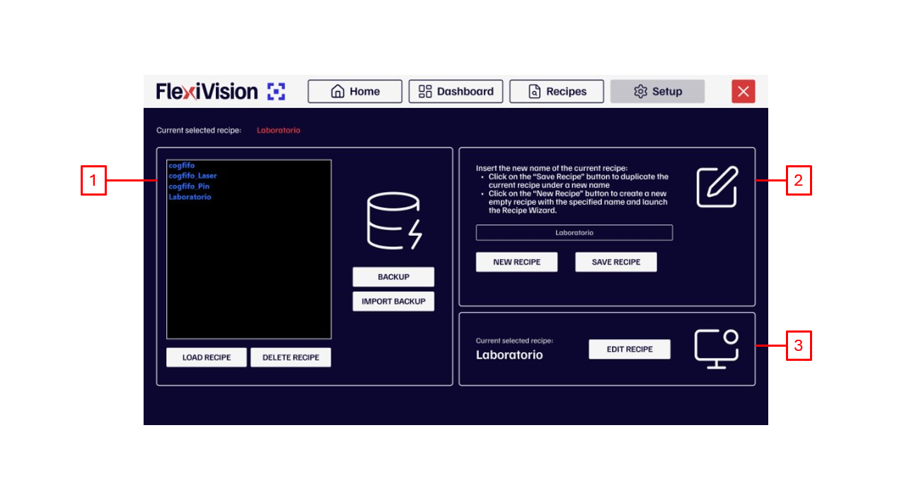
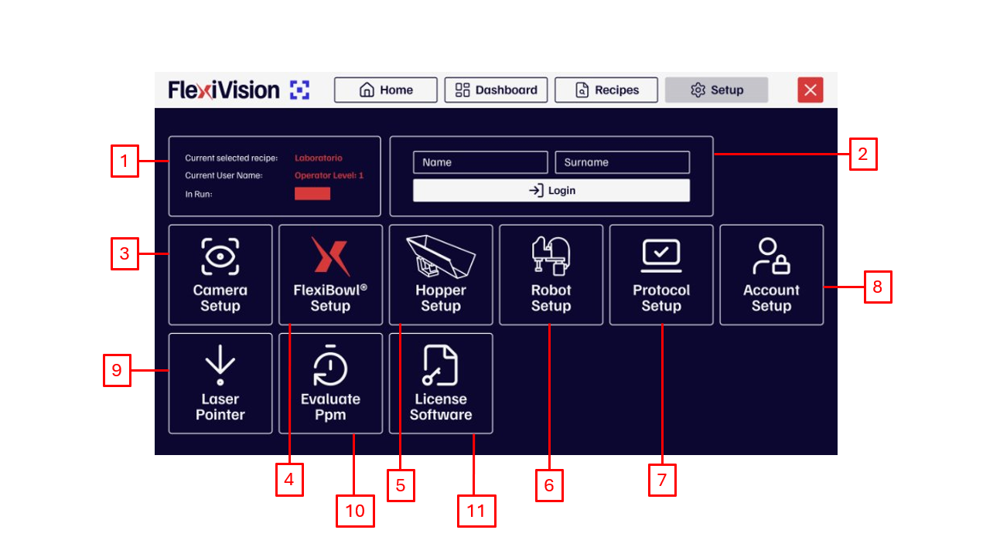

Panoramica dell’interfaccia#
descrizione generale interfaccia
Pagina Home#

# |
Descrizione |
|---|---|
1 |
Informazioni di Stato e Utente:
|
2 |
Informazioni Software e Assistenza:
|
3 |
Risorse e Guide Rapide:
|
4 |
Sezione Informativa Generale:
|
Pagina DashBoard#

# |
Descrizione |
|---|---|
1 |
Area Visione e Rilevamento
|
2 |
Stato Operativo
|
3 |
Controlli e Selezione
|
4 |
Stato Connessioni
|
5 |
Analisi Tempi di Ciclo (Timings)
|
6 |
Grafici di Performance e Storico
|
Pagina Recipes#

# |
Descrizione |
|---|---|
1 |
Gestione Database Ricette
|
2 |
Creazione e Salvataggio
|
3 |
Modifica Ricetta
|
Pagina Setup#

# |
Descrizione |
|---|---|
1 |
Informazioni di Stato
|
2 |
Pannello di Accesso
|
3 |
Camera setup: sezione dedicata alla configurazione dei parametri della telecamera. |
4 |
Flexibowl setup: area per impostare i parametri di movimento e controllo dell’alimentatore. |
5 |
Hopper setup: configurazione dei parametri della tramoggia (vibrazione e scarico). |
6 |
Robot setup: sezione per la configurazione della comunicazione e dei parametri del robot. |
7 |
Protocol setup: pagina di configurazione dei parametri dell’applicazione lato robot e lato visione. |
8 |
Account setup: permette di configurare i vari account utente in base alle qualifiche e ai livelli di accesso. |
9 |
Laser pointer: permette di usare uno strumento laser per simulare un prelievo (pick) in assenza del robot. |
10 |
Evaluate PPM: permette di effettuare una stima dei pezzi al minuto (PPM) quando si utilizza il laser pointer. |
11 |
Licence software: pagina per l’attivazione del software; qui va inserita la chiave di licenza fornita da ARS per procedere all’attivazione. |